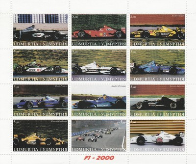
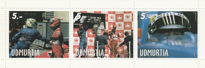

Udmurt Republic (federal subject of Russia)
 |
 Issue date: 2000 A sheet of 12 stamps showing a car from each of the 11 teams that took part in the 2000 F1 World championship. They are (in order of constructors championship position): Ferrari (F1-2000), McLaren-Mercedes (MP4/15), Williams-BMW (FW22), Benetton-Playlife (B200), BAR-Honda (002), Jordan-Mugen-Honda (EJ10), Arrows-Supertec (A21), Sauber-Petronas (C19(, Jaguar-Cosworth (R1), Minardi-Fondmetal (M02) and Prost-Peugeot (AP03). The season was marred by one death: a race marshal was killed at the 2000 Italian Grand Prix at Monza. The two Jordans collided on the approach to the Variante della Roggia chicane and slid into the cars ahead of them. The marshal was struck by a loose tyre from one of the Jordans. Michael Schumacher considered quitting the sport as this was the first death in F1 since driver Ayrton Senna's in 1994. This season held the record for least number of drivers competing in a single season with only 1 driver change (Luciano Burti in Austria) putting the total at 23. This record stood until 2008, where there were no driver changes.  Issue date: 1999 A mini sheet of three stamps featuring the 1999 Canadian Grand Prix. The 1999 Canadian Grand Prix was held on June 13, 1999 at the Circuit Gilles Villeneuve in Montreal. Heinz-Harald Frentzen (in a Jordan) suffered a brake failure and had a massive crash with four laps to go. Frentzen was unhurt, but his crash caused this contest to be the first ever F1 race to finish behind the safety car. The safety car was deployed four times in the race, which was a record at the time. It was first deployed for a collision at the start involving Jarno Trulli, Jean Alesi and Rubens Barrichello. The safety car returned to the track again when Ricardo Zonta hit what is now famously known as the "Wall of Champions". Damon Hill and Michael Schumacher also slammed into the same wall before Jacques Villeneuve crashed there bringing out the safety car a third time. After former F1 world champions Michael Schumacher, Jacques Villeneuve, Damon Hill and reigning FIA GT champion Ricardo Zonta all crashed at the same (final) corner, the concrete wall on the outside of the chicane (turn 15) got its nickname "Wall of Champions". The race was won by Mika Hakkinen (McLaren), with Giancarlo Fisichella (Benetton) second and Eddie Irvine (Ferrari) third. |